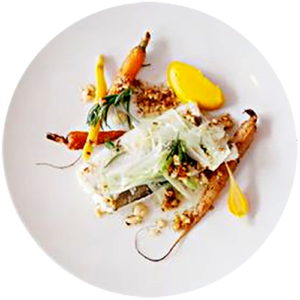

Exemple de Plat
Merlu de ligne
carottes nouvelles
épices douces
CITY GUIDE - PARIS
Merlu de ligne
carottes nouvelles
épices douces
Ambiance brute, table en bois ancien, béton ciré au sol. La salle lumineuse est trés agréable, elle est ouverte sur la cuisine. Au fond de la salle, une jolie table ronde à vue sur une rue sur un petit jardin parisien. A l'entée un joli sol en carreaux de céramique, quelques plumes de paon et de bien jolies bouteilles anciennes...
Le nombre de tables est limité, ce qui rend le restautant trés appréciable, mais aussi trés prisé !
Service toujours impreccable. L'ensemble de la table est servi rapidement, la corbeille de pain régulièrement pleine, mes serveirs expliquent le menu avec beaucoups d'attention et sont d'excellents conseils pour marier mets-vins.
On reconnaît l'ensemble de l'équipe à leurs tabliers bleu.
Le dressafe c'est un peut la marque de fabrique du chef, avec la cuisine biensûr. Ses plats sont de vrais petits tableaux de maître. Une belle recherche dans les formes et couleurs très agréable visuellement.
Enfin ! ; le goût. C'est le point le plus important, et tellement bien ajusté ici. Les papilles voltent et virevoltent au rythme des saveurs si justes, des cuissons si parfaitement maîtrisées
Chaque plat, chaque association, rien n'est laissé au hasard, de l'élément principal à la toute petite feuille d'herbe délicatement posée sur le dessus du plat. Emerveillement des sens et frénésie de créativiré sont au rendez-vous.